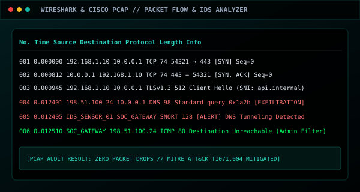
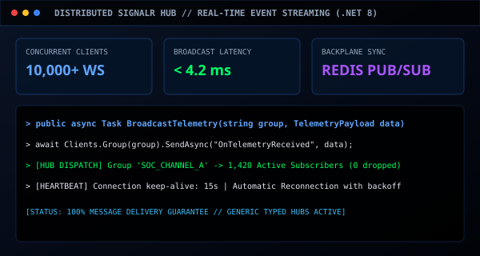
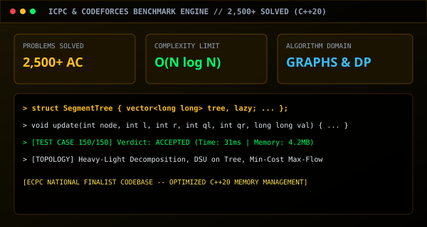
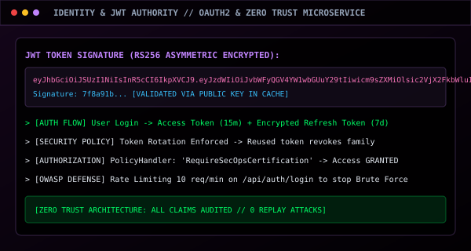
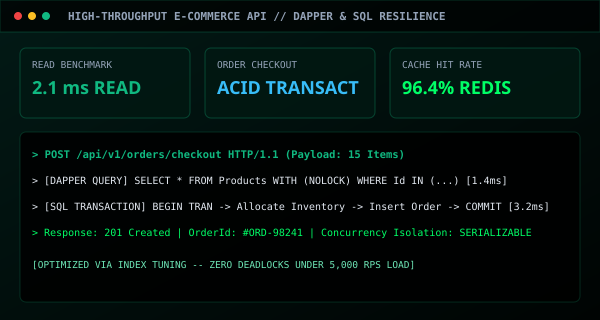
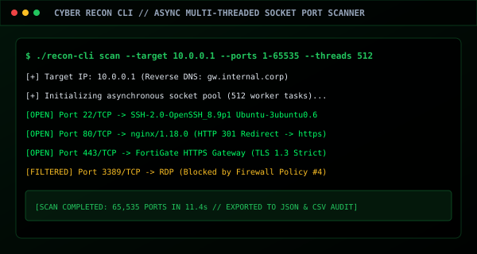
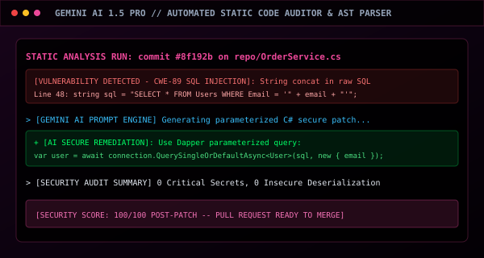

Software Engineering &
Cyber Defense Portfolio
Explore hands-on projects across Fortinet SIEM analytics, enterprise .NET full-stack architectures, AI integration, network security labs, and competitive programming instruction.

FortiSIEM & FortiAnalyzer Enterprise SOC Suite
Enterprise security operations laboratory configuring FortiSIEM for real-time CEF Syslog correlation and FortiAnalyzer for centralized incident analysis. Hardened against 15+ real-world attack scenarios (SSH brute force, DNS tunneling, privilege escalation) with FortiGate automated quarantine API dispatch.

Acolite — AI-Powered Freelance Platform
High-concurrency freelance recruitment platform integrating Google Gemini 1.5 Pro for automated CV semantic matching and skill gap scoring. Engineered on ASP.NET Core 8 Web API, React 18, TypeScript, and SignalR for sub-10ms real-time chat with JWT RS256 token rotation.

MvcTask — Multi-Tier Management System
Multi-tier enterprise management application built on ASP.NET Core 9 MVC following Clean Architecture. Features generic Repository abstractions, Unit of Work transaction boundaries, AutoMapper DTOs, Dependency Injection, and SQL Server transient fault resilience with Polly retries.

Network Intrusion & Packet Flow Analyzer
Deep packet inspection environment utilizing Wireshark and Cisco Packet Tracer to trace suspicious TCP handshakes, ARP poisoning, and DNS exfiltration patterns across corporate topologies. Hardened with Snort IDS/IPS signature rules.

Distributed Real-Time WebSocket Engine
High-concurrency SignalR communication infrastructure supporting Redis Pub/Sub backplane scaling, group-based broadcast channels, user presence tracking, and automatic reconnection backoff.

ICPC & ECPC Problem Solving & Coaching
Algorithmic training curriculum and problem archive used to instruct 50+ students at Horus University Faculty of AI for national ECPC qualifiers. Features implementations of trees, graphs, and dynamic programming in C++20.

Secure Identity & Token Authority Microservice
Hardened OAuth2/JWT authentication server built with ASP.NET Core Identity. Enforces encrypted refresh-token rotation, fine-grained Role-Based Access Control (RBAC), and brute-force mitigation.

High-Throughput E-Commerce RESTful Engine
Scalable e-commerce backend handling product catalogs, customer carts, and transactional order checkout with SQL Server index tuning and Dapper for high-speed query reads.

Cyber Recon & Asynchronous Port Scanner
Multi-threaded networking tool written in C# utilizing raw socket connections for asynchronous TCP port scanning, service banner grabbing, and open-port vulnerability detection.

Gemini AI Automated Code Security Auditor
Intelligent code analysis system integrating Google Gemini AI 1.5 Pro to detect SQL injection, insecure deserialization, hardcoded secrets, and performance bottlenecks in git commits.